강남 선릉역 · 두통 · 어지럼증 · 자율신경 진료
반복되는 두통과 어지럼증
자율신경실조증
원인에 맞는 치료가 핵심입니다
두통약을 먹어도 반복되는 머리 통증, 검사에서 특별한 이상이 없다는 어지럼증, 잠을 방해하는 두근거림과 머리 멍함. 비슷해 보이는 증상도 원인은 서로 다를 수 있습니다. 증상이 시작된 상황, 빈도, 기존 검사와 복용약, 생활의 변화를 함께 확인합니다.
한의학+미국 정골의학+통합의학3가지 관점으로 만성 뇌신경질환·자율신경질환을 진료합니다
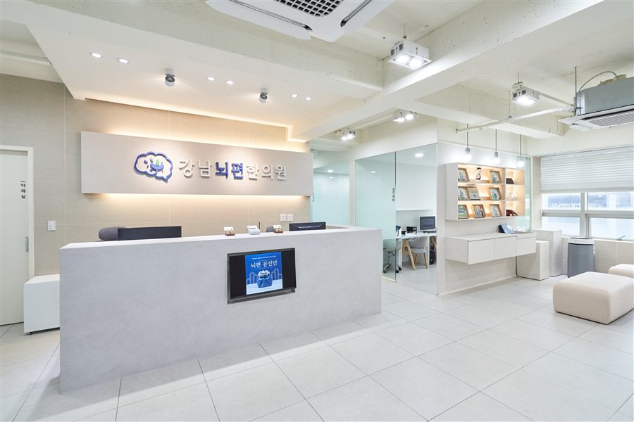
이런 증상으로 불편하신가요?
해당하는 장면을 선택하면 확인해 볼 진료 분야를 안내해 드립니다.
6대 집중 진료 분야
분야를 선택해 질환별 안내를 확인하세요.
두통
욱신거림·조임·찌릿함, 통증의 유형부터 구분합니다.
어지럼증
빙빙 도는지, 휘청이는지, 일어날 때 핑 도는지 확인합니다.
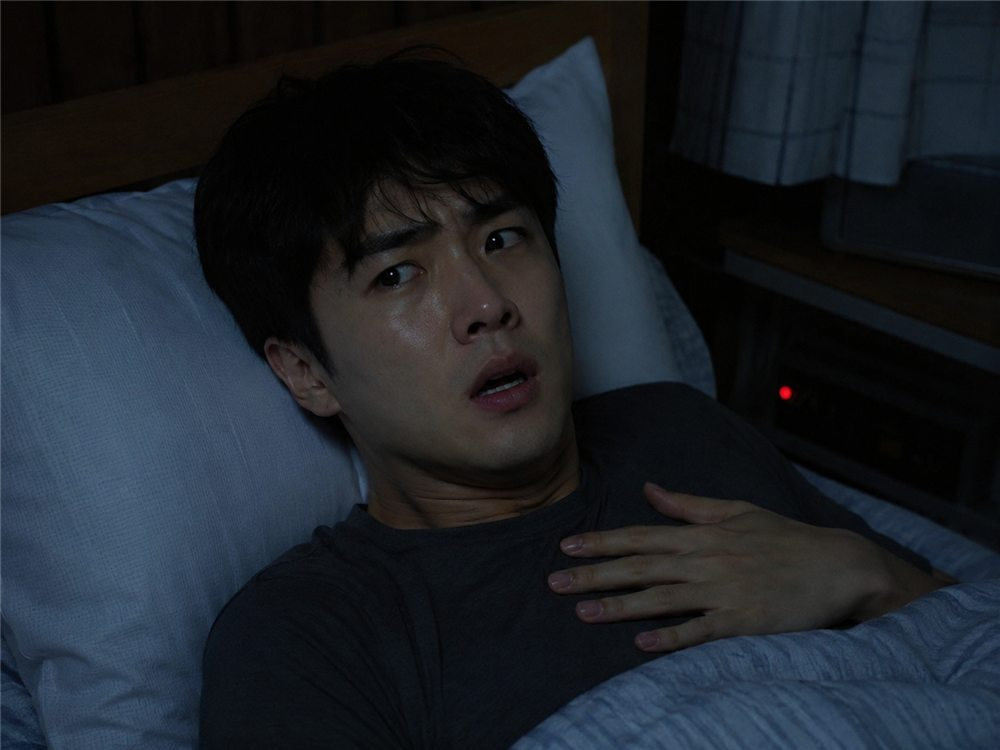
자율신경실조증
두근거림·불면·소화불편의 원인을 따로 확인합니다.

브레인포그
머리가 멍하고 집중이 어려운 이유를 살핍니다.

집중력 개선
초등·중학생·수험생의 집중 저하 원인을 살핍니다.
경도인지장애
건망증·경도인지장애·치매를 일상 기능으로 구분합니다.
강남뇌편한의원의 진료 관점
한의학 · 미국 정골의학 · 통합의학,
3가지 관점으로 살핍니다
두통·어지럼증 같은 만성 뇌신경질환과 두근거림·불면 같은 자율신경질환은 한 가지 시선으로는 원인을 다 설명하기 어렵습니다. 세 가지 관점을 함께 놓고 증상의 배경을 확인하고 진료 방향을 정합니다.
한의학
문진·맥진·복진 등 한의학적 진단을 바탕으로 침·약침·한약·추나 등 보완 진료의 적합성을 살핍니다.
미국 정골의학
목·척추·근골격계의 구조와 신경 기능의 연결을 함께 보는 관점으로 증상의 배경을 살핍니다.
통합의학
뇌파·자율신경·혈관 검사 등 객관적 검사와 기존 병원 진료 내용을 함께 고려해 진료 방향을 세웁니다.
필요한 표준치료는 유지하며, 진료 방법과 경과는 환자 상태에 따라 달라질 수 있습니다.
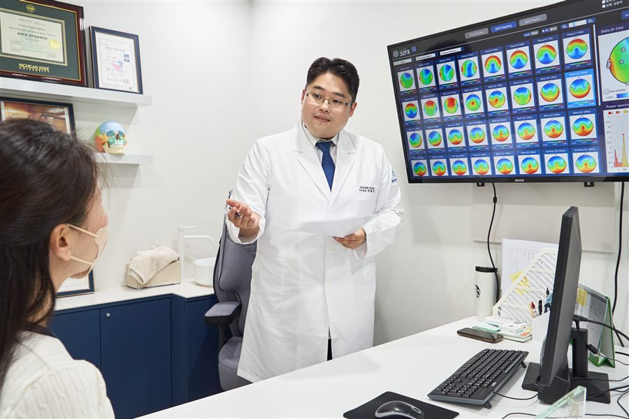
내원 환자 500명 기준
전국에서 오는
한의원입니다
강남뇌편한의원은 서울·경기는 물론 인천, 부산, 대구, 제주까지 전국 각지에서 환자분들이 내원하고 계십니다.
내원 환자 집계기준: 최근 내원 환자 500명 분석
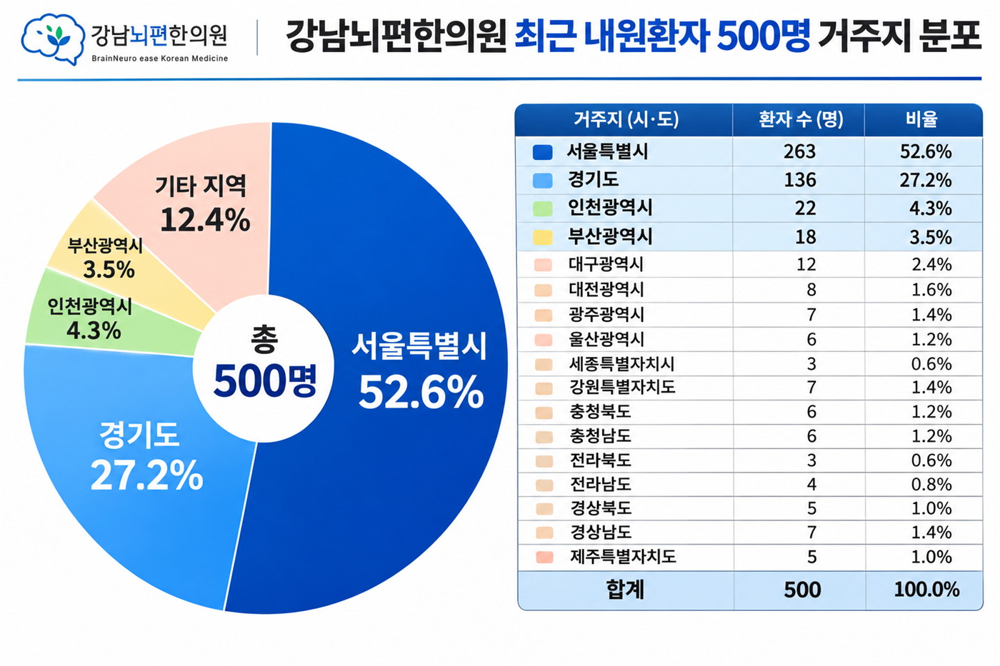
강남뇌편한의원의 진료 과정
증상 확인부터 경과 확인까지 단계별로 진행합니다.
문진
증상 시작 시기·유발 상황·복용약·기존 검사 결과를 확인합니다.
감별
위험 신호와 다른 질환의 가능성을 확인하고 필요한 검사를 안내합니다.
개별 진료계획
질환별 표준치료 및 침·한약·약침·추나 등 적용 가능성과 주의점을 상담합니다.
경과 확인
두통일·어지럼 상황·수면시간·집중력·기억력·생활 기능 변화를 기록합니다.
원내 검사·진료 장비

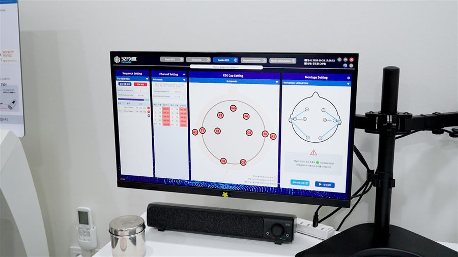
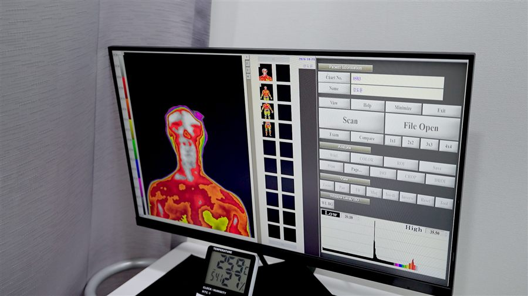

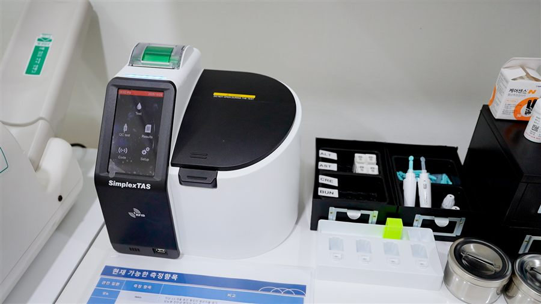
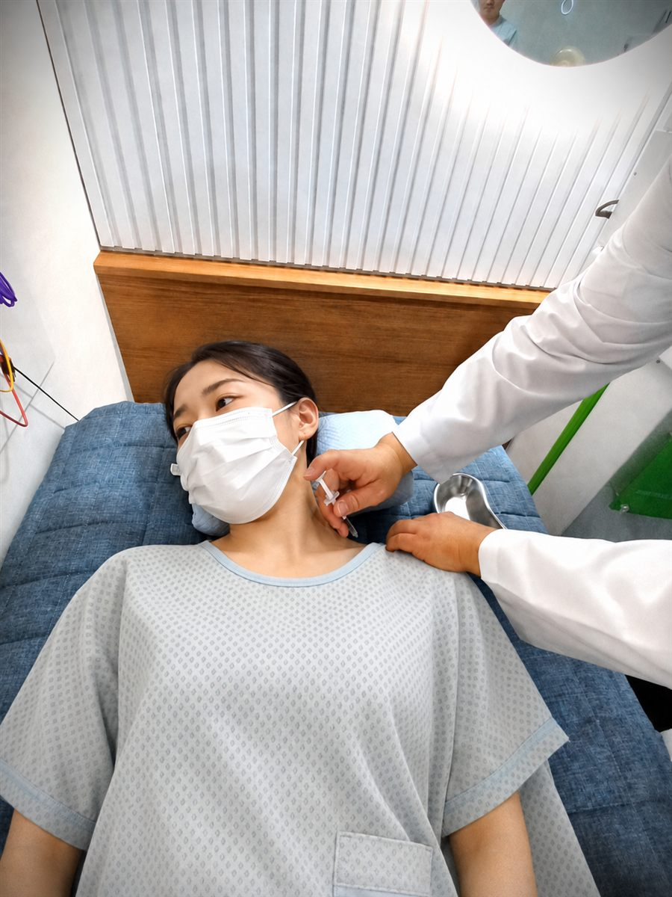
검사 항목과 장비는 환자 상태에 따라 선택적으로 시행됩니다. 실제 시행 항목은 진료 시 안내해 드립니다.
원장 인사말
내 병을 치료했듯
환자를 포기하지 않는 원장
13살부터 앓던 만성 편두통과 이명,
어디를 가도 해결되지 않아 너무도 힘들던 시기가 저에게도 있었습니다.
한의대 입학 후 스스로 연구하고 치료하며 마침내 완치에 이르렀습니다.제가 겪었던 고통 속에 있는 분들의 마음을 너무 잘 압니다.
그 동안 많은 공부와 경험으로 치료 방법을 갖췄습니다만,
모든 환자분의 병을 가볍게 보지 않고 세심하게 진료합니다.
또, 어떤 경우라도 포기하지 않고 방법을 찾아갑니다.고통에서 벗어나는 기쁨을 저는 너무 잘 알고 있습니다.
이런 진심을 뒷받침할 실력을 꾸준히 쌓아 가고 있습니다.
결국 진심은 병을 이긴다고 믿습니다.
경력 및 학회 활동
- 현 강남 뇌편한의원 대표원장
- 미국 미시간주립대학 정골의학 상급자 과정 연수
- 척추신경추나의학회 회원 (수료시험 전국차석)
- 미국 근골격계 초음파사(ARDMS) 자격증 취득
- 통합뇌질환학회 회원
- 대한뇌파한의학회 회원
- 체형사상의학회 회원
- 전 심온한방병원 진료과장
- 전 연합한의원 공동원장
- 전 민한의원 대표원장
- 06년도 서울대-연세대-한의대 동시합격
- 차의과대학교 통합의학 석사과정 중
기존 홈페이지 기재 내용이며, 게시 전 의료진 최종 확인이 필요합니다.
진료실과 대기 공간
편안한 분위기에서 충분히 상담하실 수 있도록 마련했습니다.

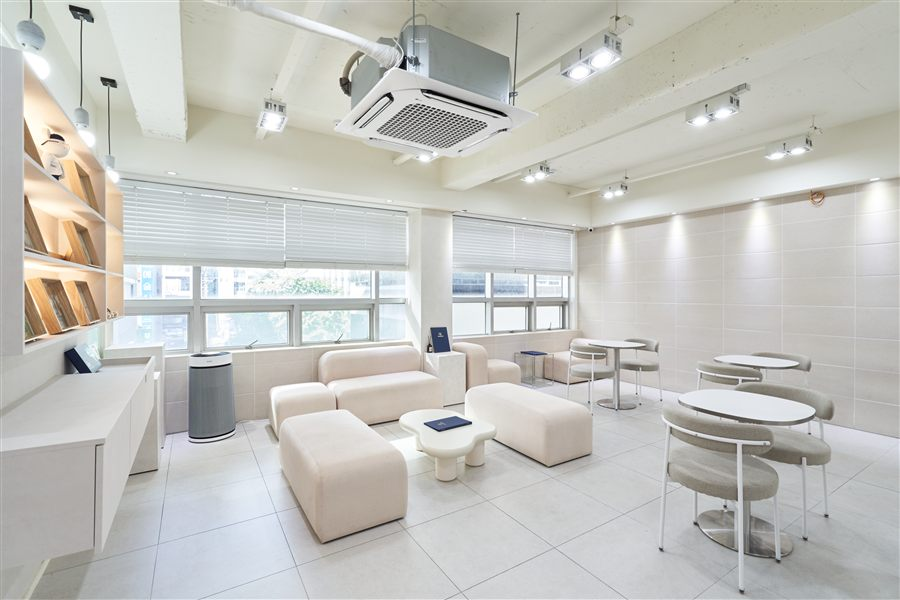

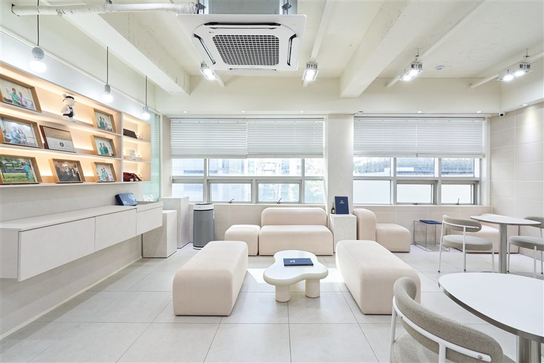
환자 치료 후기
환자분이 직접 남긴 후기입니다. 치료 결과와 경과는 개인마다 다를 수 있으며 모든 분께 같은 효과를 보장하지 않습니다.

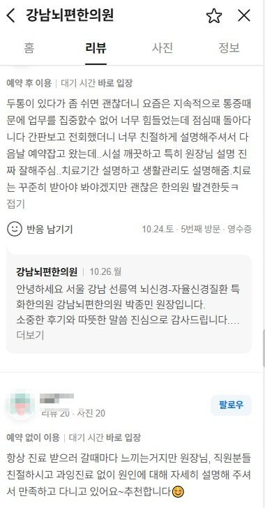
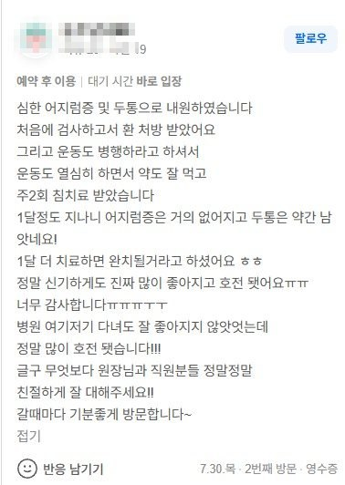
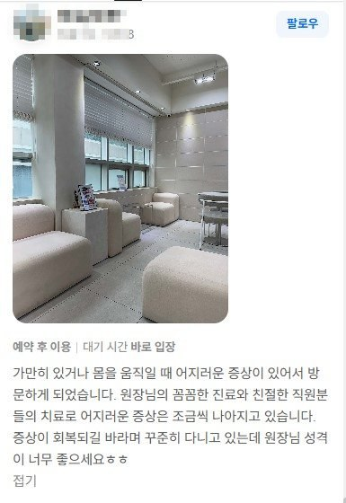

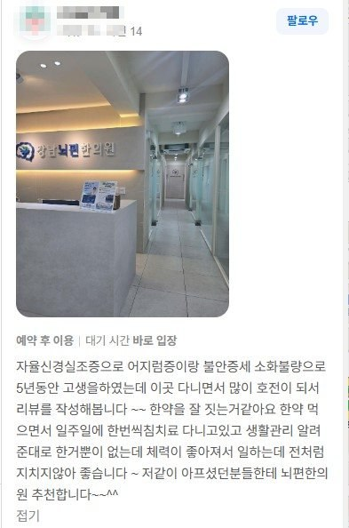
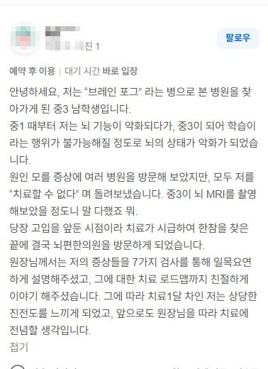


환자가 자주 묻는 질문
MRI가 정상인데도 상담할 수 있나요?
네. 다만 영상검사에서 확인되지 않는 수면·기립성·전정·기능성 문제 등이 있을 수 있어 기존 검사와 증상 패턴을 함께 살펴야 합니다.
기존 병원약을 먹고 있어도 되나요?
복용약을 알려주세요. 병행 가능성과 주의사항을 확인하고 처방약의 중단·감량은 원래 처방 의료진과 상의하도록 안내합니다.
진료시간 및 오시는 길
서울 강남구 테헤란로51길 7, 수지빌딩 3층
- 평일 오전 10:00 ~ 오후 7:00 (점심 13:00 ~ 14:00)
- 토요일 오전 10:00 ~ 오후 3:00 (점심시간 없이 진료)
- 일요일·공휴일 휴진
- 지하철 2호선·수인분당선 선릉역 5번 출구(엘리베이터) 도보 2분(60m). 빅토리아빌딩과 어반벤치빌딩 사이길로 50m 들어오면 왼쪽에 있습니다. 6번 출구에서는 도보 3분(에스컬레이터)
- 버스 간선 472 / 지선 3426, 4312, 6411 / 마을버스 강남07
- 주차 건물 내 주차가 어려워 휘닉스오피스텔(테헤란로 323) 주차장(도보 2분)을 이용해 주세요. 주차 1시간 지원
증상이 반복된다면 진료 상담으로 확인해 보세요
한의학 · 미국 정골의학 · 통합의학, 3가지 관점의 진료
증상 시작 시기, 반복되는 상황, 이전 검사 결과, 현재 복용약을 알려주시면 도움이 됩니다.